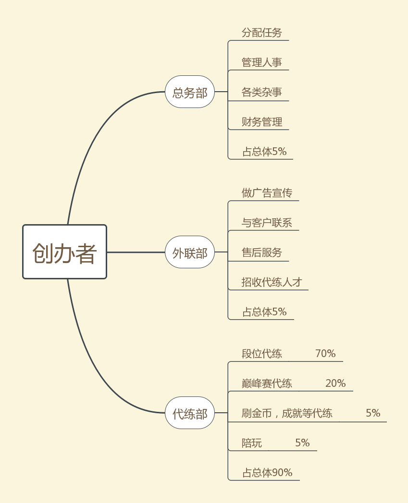

创业计划书
创业项目介绍
王者荣耀段位代练，技术陪玩，省服英雄上榜，刷金币，刷成就等级，刷贵族积分等等。
创业项目创新点
真心诚意待人，任务运行高效，诚信度高，让客户对我们有一定的了解，价格低。
市场调研和竞争分析
依据我个人对王者荣耀的亲身体验，我发现，王者荣耀市场巨大
并且代练人员众多，但是很多代练都是个体经营户，只有少部分代练平台，其中大多数诚信度无法保证
但是代练依旧盛行，说明大多数王者荣耀玩家都是比较在乎自己的段位的
我自己也有亲身经历,我当前段位是最强王者
我发现有些人他就不配上最强王者这个段位，他就菜
可是他就是王者段位，可想而知为什么他能上王者
代练就是他的法宝，并且我曾经也做过代练和演员，我就知道为啥他能上王者。
核心竞争力
首先，我们真心诚意待人，我们将向客户隆重介绍我们自己，提供一定的真实信息，比如我们是学生组织，代练兼职一方面是发挥我们游戏打的好的特长，另一方面是游戏能带给我们快乐，让他们相信我们，而且互相理解的同时，给予我们完成任务的时间也会相应的增加。
其次，我们组织结构完整，代练项目众多，有组织担保，诚信度高，并且相对于零散的个体户代练，我们更为专业，而且由于我们代练技术人员较多，可以共同完成代练任务，比如段位代练排位五排，巅峰赛同时进入游戏等等。
最后，我们规模并不大，容易管理和经营，能高效的满足客户的需求，而且我们的代练价格将会低于市场价。
创业项目创新点
外联部：在网上发布代练广告，广纳技术人才，并与有代练需求的客户联系，并负责售后服务。
总务部：负责人事管理和财务管理，合理分配外联部接到的客户需求任务，并负责各类杂事，为外联部和代练部的正常工作清理障碍。
代练部：负责及时完成总务部分配的任务。
投资，营收和利润预测
投资为零，基本无成本，只要花时间。
营收和利润完全根据代练人才人数以及水平决定。
另外只要不耽误自己的正常学习，可以适当加大接单力度。
组织人员
大多是王者荣耀技术拔尖的年轻人，少部分人负责总务和外联。 并且组成人员主要是自己现实中认识的朋友兼职，并不主要以此为业。
组织结构

Copyright © 网络工程一班 201905555528 陆志强 版权所有